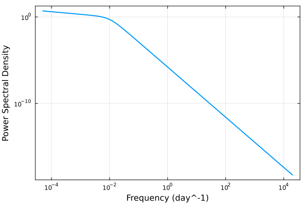
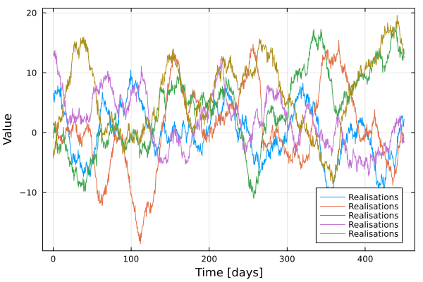
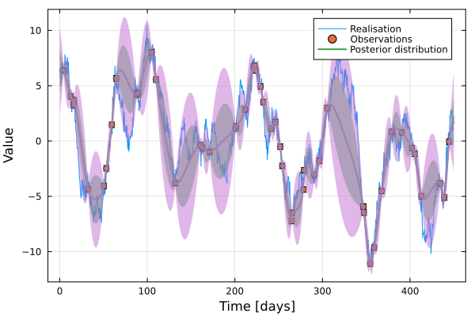
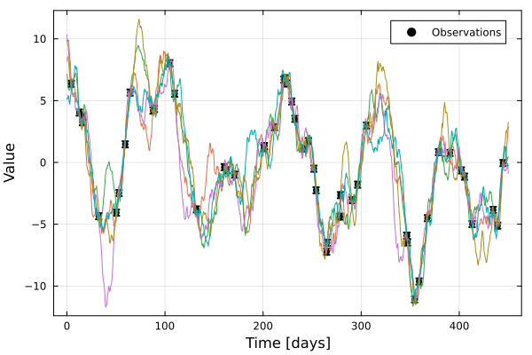

Simulations
In addition to inference, the Gaussian process modelling framework allows simulations and predictions of the underlying process. This is done by conditioning the Gaussian process on some observations and then sampling from the conditioned distribution.
Sampling from the Gaussian process
Assuming a SingleBendingPowerLaw we can draw realisations from the Gaussian process with a mean. First, we define the power spectral density function and plot it.
using Random
using Plots
using Pioran
rng = MersenneTwister(1234)
# Define power spectral density function
𝓟 = SingleBendingPowerLaw(0.3,1e-2,2.9)
f_min, f_max = 1e-3, 1e3
f0,fM = f_min/20.,f_max*20.
f = 10 .^ range(log10(f0), log10(fM), length=1000)
plot(f, 𝓟(f), xlabel="Frequency (day^-1)",ylabel="Power Spectral Density",legend=false,framestyle = :box,xscale=:log10,yscale=:log10,lw=2)
Then we approximate it to form a covariance function. We then build the Gaussian process and draw realisations from it using rand.
variance = 15.2
# Approximation of the PSD to form a covariance function
𝓡 = approx(𝓟, f_min, f_max, 20, variance, basis_function="SHO")
μ = 1.3
# Build the GP
f = ScalableGP(μ, 𝓡) # Define the GP
T = 450 # days
t = range(0, stop=T, length=1000)
σ² = ones(length(t))*0.25
fx = f(t, σ²) # Gaussian process
realisations = [rand(rng,fx) for _ in 1:5]
plot(t, realisations, label="Realisations", xlabel="Time [days]", framestyle = :box,ylabel="Value")
Sampling from a Gaussian process built with semi-separable covariance functions is very efficient. The time complexity is O(N) where N is the number of data points.
Conditioning the Gaussian process
We can compute the conditioned or posterior distribution of the Gaussian process given some observations. Let's use a subset of the realisations to condition the Gaussian process and then sample from the conditioned distribution.
using StatsBase
idx = sort(sample(1:length(t), 50, replace = false));
t_obs = t[idx]
y_obs = realisations[1][idx]
yerr = 0.25*ones(length(t_obs))
fx = f(t_obs, yerr.^2) # Gaussian processAbstractGPs.FiniteGP{ScalableGP{AbstractGPs.GP{AbstractGPs.ConstMean{Float64}, Pioran.SumOfCelerite{StructArrays.StructArray{<:Pioran.SemiSeparable}}}, Pioran.SumOfCelerite{StructArrays.StructArray{<:Pioran.SemiSeparable}}, Symbol}, Vector{Float64}, LinearAlgebra.Diagonal{Float64, Vector{Float64}}}(
f: ScalableGP{AbstractGPs.GP{AbstractGPs.ConstMean{Float64}, Pioran.SumOfCelerite{StructArrays.StructArray{<:Pioran.SemiSeparable}}}, Pioran.SumOfCelerite{StructArrays.StructArray{<:Pioran.SemiSeparable}}, Symbol}(AbstractGPs.GP{AbstractGPs.ConstMean{Float64}, Pioran.SumOfCelerite{StructArrays.StructArray{<:Pioran.SemiSeparable}}}(AbstractGPs.ConstMean{Float64}(1.3), Pioran.SumOfCelerite{StructArrays.StructArray{<:Pioran.SemiSeparable}}(Celerite[Celerite(0.21179581122061306, 0.21179581122061306, 0.0002221441469079183, 0.0002221441469079183), Celerite(0.38542244831627853, 0.38542244831627853, 0.0006300497947253256, 0.0006300497947253256), Celerite(0.9038882037020084, 0.9038882037020084, 0.0017869601758986303, 0.0017869601758986303), Celerite(1.6067166095810141, 1.6067166095810141, 0.0050682131745472155, 0.0050682131745472155), Celerite(4.964666291074675, 4.964666291074675, 0.014374570362059993, 0.014374570362059993), Celerite(22.755812872815056, 22.755812872815056, 0.04076945187142277, 0.04076945187142277), Celerite(5.378025805869529, 5.378025805869529, 0.11563115724719714, 0.11563115724719714), Celerite(0.5417886639897328, 0.5417886639897328, 0.32795546451037977, 0.32795546451037977), Celerite(0.08070461417658467, 0.08070461417658467, 0.9301540282286335, 0.9301540282286335), Celerite(0.010848075938726597, 0.010848075938726597, 2.638121970376775, 2.638121970376775), Celerite(0.0015090806302273192, 0.0015090806302273192, 7.482295748198312, 7.482295748198312), Celerite(0.0002076692891940062, 0.0002076692891940062, 21.221440969050757, 21.221440969050757), Celerite(2.8676529647079397e-5, 2.8676529647079397e-5, 60.18868699641365, 60.18868699641365), Celerite(3.955543296634202e-6, 3.955543296634202e-6, 170.70839099171252, 170.70839099171252), Celerite(5.458037196298439e-7, 5.458037196298439e-7, 484.16664674402534, 484.16664674402534), Celerite(7.53042020169437e-8, 7.53042020169437e-8, 1373.203393562152, 1373.203393562152), Celerite(1.0389899331678754e-8, 1.0389899331678754e-8, 3894.70768540476, 3894.70768540476), Celerite(1.4338973791019396e-9, 1.4338973791019396e-9, 11046.249977144691, 11046.249977144691), Celerite(1.9677308815711412e-10, 1.9677308815711412e-10, 31329.601195702533, 31329.601195702533), Celerite(3.012647957419647e-11, 3.012647957419647e-11, 88857.65876316732, 88857.65876316732)], [0.21179581122061306, 0.38542244831627853, 0.9038882037020084, 1.6067166095810141, 4.964666291074675, 22.755812872815056, 5.378025805869529, 0.5417886639897328, 0.08070461417658467, 0.010848075938726597, 0.0015090806302273192, 0.0002076692891940062, 2.8676529647079397e-5, 3.955543296634202e-6, 5.458037196298439e-7, 7.53042020169437e-8, 1.0389899331678754e-8, 1.4338973791019396e-9, 1.9677308815711412e-10, 3.012647957419647e-11], [0.21179581122061306, 0.38542244831627853, 0.9038882037020084, 1.6067166095810141, 4.964666291074675, 22.755812872815056, 5.378025805869529, 0.5417886639897328, 0.08070461417658467, 0.010848075938726597, 0.0015090806302273192, 0.0002076692891940062, 2.8676529647079397e-5, 3.955543296634202e-6, 5.458037196298439e-7, 7.53042020169437e-8, 1.0389899331678754e-8, 1.4338973791019396e-9, 1.9677308815711412e-10, 3.012647957419647e-11], [0.0002221441469079183, 0.0006300497947253256, 0.0017869601758986303, 0.0050682131745472155, 0.014374570362059993, 0.04076945187142277, 0.11563115724719714, 0.32795546451037977, 0.9301540282286335, 2.638121970376775, 7.482295748198312, 21.221440969050757, 60.18868699641365, 170.70839099171252, 484.16664674402534, 1373.203393562152, 3894.70768540476, 11046.249977144691, 31329.601195702533, 88857.65876316732], [0.0002221441469079183, 0.0006300497947253256, 0.0017869601758986303, 0.0050682131745472155, 0.014374570362059993, 0.04076945187142277, 0.11563115724719714, 0.32795546451037977, 0.9301540282286335, 2.638121970376775, 7.482295748198312, 21.221440969050757, 60.18868699641365, 170.70839099171252, 484.16664674402534, 1373.203393562152, 3894.70768540476, 11046.249977144691, 31329.601195702533, 88857.65876316732])), Pioran.SumOfCelerite{StructArrays.StructArray{<:Pioran.SemiSeparable}}(Celerite[Celerite(0.21179581122061306, 0.21179581122061306, 0.0002221441469079183, 0.0002221441469079183), Celerite(0.38542244831627853, 0.38542244831627853, 0.0006300497947253256, 0.0006300497947253256), Celerite(0.9038882037020084, 0.9038882037020084, 0.0017869601758986303, 0.0017869601758986303), Celerite(1.6067166095810141, 1.6067166095810141, 0.0050682131745472155, 0.0050682131745472155), Celerite(4.964666291074675, 4.964666291074675, 0.014374570362059993, 0.014374570362059993), Celerite(22.755812872815056, 22.755812872815056, 0.04076945187142277, 0.04076945187142277), Celerite(5.378025805869529, 5.378025805869529, 0.11563115724719714, 0.11563115724719714), Celerite(0.5417886639897328, 0.5417886639897328, 0.32795546451037977, 0.32795546451037977), Celerite(0.08070461417658467, 0.08070461417658467, 0.9301540282286335, 0.9301540282286335), Celerite(0.010848075938726597, 0.010848075938726597, 2.638121970376775, 2.638121970376775), Celerite(0.0015090806302273192, 0.0015090806302273192, 7.482295748198312, 7.482295748198312), Celerite(0.0002076692891940062, 0.0002076692891940062, 21.221440969050757, 21.221440969050757), Celerite(2.8676529647079397e-5, 2.8676529647079397e-5, 60.18868699641365, 60.18868699641365), Celerite(3.955543296634202e-6, 3.955543296634202e-6, 170.70839099171252, 170.70839099171252), Celerite(5.458037196298439e-7, 5.458037196298439e-7, 484.16664674402534, 484.16664674402534), Celerite(7.53042020169437e-8, 7.53042020169437e-8, 1373.203393562152, 1373.203393562152), Celerite(1.0389899331678754e-8, 1.0389899331678754e-8, 3894.70768540476, 3894.70768540476), Celerite(1.4338973791019396e-9, 1.4338973791019396e-9, 11046.249977144691, 11046.249977144691), Celerite(1.9677308815711412e-10, 1.9677308815711412e-10, 31329.601195702533, 31329.601195702533), Celerite(3.012647957419647e-11, 3.012647957419647e-11, 88857.65876316732, 88857.65876316732)], [0.21179581122061306, 0.38542244831627853, 0.9038882037020084, 1.6067166095810141, 4.964666291074675, 22.755812872815056, 5.378025805869529, 0.5417886639897328, 0.08070461417658467, 0.010848075938726597, 0.0015090806302273192, 0.0002076692891940062, 2.8676529647079397e-5, 3.955543296634202e-6, 5.458037196298439e-7, 7.53042020169437e-8, 1.0389899331678754e-8, 1.4338973791019396e-9, 1.9677308815711412e-10, 3.012647957419647e-11], [0.21179581122061306, 0.38542244831627853, 0.9038882037020084, 1.6067166095810141, 4.964666291074675, 22.755812872815056, 5.378025805869529, 0.5417886639897328, 0.08070461417658467, 0.010848075938726597, 0.0015090806302273192, 0.0002076692891940062, 2.8676529647079397e-5, 3.955543296634202e-6, 5.458037196298439e-7, 7.53042020169437e-8, 1.0389899331678754e-8, 1.4338973791019396e-9, 1.9677308815711412e-10, 3.012647957419647e-11], [0.0002221441469079183, 0.0006300497947253256, 0.0017869601758986303, 0.0050682131745472155, 0.014374570362059993, 0.04076945187142277, 0.11563115724719714, 0.32795546451037977, 0.9301540282286335, 2.638121970376775, 7.482295748198312, 21.221440969050757, 60.18868699641365, 170.70839099171252, 484.16664674402534, 1373.203393562152, 3894.70768540476, 11046.249977144691, 31329.601195702533, 88857.65876316732], [0.0002221441469079183, 0.0006300497947253256, 0.0017869601758986303, 0.0050682131745472155, 0.014374570362059993, 0.04076945187142277, 0.11563115724719714, 0.32795546451037977, 0.9301540282286335, 2.638121970376775, 7.482295748198312, 21.221440969050757, 60.18868699641365, 170.70839099171252, 484.16664674402534, 1373.203393562152, 3894.70768540476, 11046.249977144691, 31329.601195702533, 88857.65876316732]), :celerite)
x: [4.504504504504505, 12.612612612612613, 15.765765765765765, 16.216216216216218, 32.432432432432435, 50.450450450450454, 53.153153153153156, 59.45945945945946, 64.41441441441441, 87.83783783783784 … 359.009009009009, 367.56756756756755, 378.8288288288288, 390.5405405405405, 402.2522522522523, 405.4054054054054, 413.06306306306305, 434.68468468468467, 439.18918918918916, 444.5945945945946]
Σy: [0.0625 0.0 … 0.0 0.0; 0.0 0.0625 … 0.0 0.0; … ; 0.0 0.0 … 0.0625 0.0; 0.0 0.0 … 0.0 0.0625]
)
We can compute the posterior distribution of the Gaussian process given the observations.
fp = posterior(fx, y_obs) # Posterior distributionPioran.PosteriorGP{AbstractGPs.FiniteGP{ScalableGP{AbstractGPs.GP{AbstractGPs.ConstMean{Float64}, Pioran.SumOfCelerite{StructArrays.StructArray{<:Pioran.SemiSeparable}}}, Pioran.SumOfCelerite{StructArrays.StructArray{<:Pioran.SemiSeparable}}, Symbol}, Vector{Float64}, LinearAlgebra.Diagonal{Float64, Vector{Float64}}}, Vector{Float64}}(AbstractGPs.FiniteGP{ScalableGP{AbstractGPs.GP{AbstractGPs.ConstMean{Float64}, Pioran.SumOfCelerite{StructArrays.StructArray{<:Pioran.SemiSeparable}}}, Pioran.SumOfCelerite{StructArrays.StructArray{<:Pioran.SemiSeparable}}, Symbol}, Vector{Float64}, LinearAlgebra.Diagonal{Float64, Vector{Float64}}}(
f: ScalableGP{AbstractGPs.GP{AbstractGPs.ConstMean{Float64}, Pioran.SumOfCelerite{StructArrays.StructArray{<:Pioran.SemiSeparable}}}, Pioran.SumOfCelerite{StructArrays.StructArray{<:Pioran.SemiSeparable}}, Symbol}(AbstractGPs.GP{AbstractGPs.ConstMean{Float64}, Pioran.SumOfCelerite{StructArrays.StructArray{<:Pioran.SemiSeparable}}}(AbstractGPs.ConstMean{Float64}(1.3), Pioran.SumOfCelerite{StructArrays.StructArray{<:Pioran.SemiSeparable}}(Celerite[Celerite(0.21179581122061306, 0.21179581122061306, 0.0002221441469079183, 0.0002221441469079183), Celerite(0.38542244831627853, 0.38542244831627853, 0.0006300497947253256, 0.0006300497947253256), Celerite(0.9038882037020084, 0.9038882037020084, 0.0017869601758986303, 0.0017869601758986303), Celerite(1.6067166095810141, 1.6067166095810141, 0.0050682131745472155, 0.0050682131745472155), Celerite(4.964666291074675, 4.964666291074675, 0.014374570362059993, 0.014374570362059993), Celerite(22.755812872815056, 22.755812872815056, 0.04076945187142277, 0.04076945187142277), Celerite(5.378025805869529, 5.378025805869529, 0.11563115724719714, 0.11563115724719714), Celerite(0.5417886639897328, 0.5417886639897328, 0.32795546451037977, 0.32795546451037977), Celerite(0.08070461417658467, 0.08070461417658467, 0.9301540282286335, 0.9301540282286335), Celerite(0.010848075938726597, 0.010848075938726597, 2.638121970376775, 2.638121970376775), Celerite(0.0015090806302273192, 0.0015090806302273192, 7.482295748198312, 7.482295748198312), Celerite(0.0002076692891940062, 0.0002076692891940062, 21.221440969050757, 21.221440969050757), Celerite(2.8676529647079397e-5, 2.8676529647079397e-5, 60.18868699641365, 60.18868699641365), Celerite(3.955543296634202e-6, 3.955543296634202e-6, 170.70839099171252, 170.70839099171252), Celerite(5.458037196298439e-7, 5.458037196298439e-7, 484.16664674402534, 484.16664674402534), Celerite(7.53042020169437e-8, 7.53042020169437e-8, 1373.203393562152, 1373.203393562152), Celerite(1.0389899331678754e-8, 1.0389899331678754e-8, 3894.70768540476, 3894.70768540476), Celerite(1.4338973791019396e-9, 1.4338973791019396e-9, 11046.249977144691, 11046.249977144691), Celerite(1.9677308815711412e-10, 1.9677308815711412e-10, 31329.601195702533, 31329.601195702533), Celerite(3.012647957419647e-11, 3.012647957419647e-11, 88857.65876316732, 88857.65876316732)], [0.21179581122061306, 0.38542244831627853, 0.9038882037020084, 1.6067166095810141, 4.964666291074675, 22.755812872815056, 5.378025805869529, 0.5417886639897328, 0.08070461417658467, 0.010848075938726597, 0.0015090806302273192, 0.0002076692891940062, 2.8676529647079397e-5, 3.955543296634202e-6, 5.458037196298439e-7, 7.53042020169437e-8, 1.0389899331678754e-8, 1.4338973791019396e-9, 1.9677308815711412e-10, 3.012647957419647e-11], [0.21179581122061306, 0.38542244831627853, 0.9038882037020084, 1.6067166095810141, 4.964666291074675, 22.755812872815056, 5.378025805869529, 0.5417886639897328, 0.08070461417658467, 0.010848075938726597, 0.0015090806302273192, 0.0002076692891940062, 2.8676529647079397e-5, 3.955543296634202e-6, 5.458037196298439e-7, 7.53042020169437e-8, 1.0389899331678754e-8, 1.4338973791019396e-9, 1.9677308815711412e-10, 3.012647957419647e-11], [0.0002221441469079183, 0.0006300497947253256, 0.0017869601758986303, 0.0050682131745472155, 0.014374570362059993, 0.04076945187142277, 0.11563115724719714, 0.32795546451037977, 0.9301540282286335, 2.638121970376775, 7.482295748198312, 21.221440969050757, 60.18868699641365, 170.70839099171252, 484.16664674402534, 1373.203393562152, 3894.70768540476, 11046.249977144691, 31329.601195702533, 88857.65876316732], [0.0002221441469079183, 0.0006300497947253256, 0.0017869601758986303, 0.0050682131745472155, 0.014374570362059993, 0.04076945187142277, 0.11563115724719714, 0.32795546451037977, 0.9301540282286335, 2.638121970376775, 7.482295748198312, 21.221440969050757, 60.18868699641365, 170.70839099171252, 484.16664674402534, 1373.203393562152, 3894.70768540476, 11046.249977144691, 31329.601195702533, 88857.65876316732])), Pioran.SumOfCelerite{StructArrays.StructArray{<:Pioran.SemiSeparable}}(Celerite[Celerite(0.21179581122061306, 0.21179581122061306, 0.0002221441469079183, 0.0002221441469079183), Celerite(0.38542244831627853, 0.38542244831627853, 0.0006300497947253256, 0.0006300497947253256), Celerite(0.9038882037020084, 0.9038882037020084, 0.0017869601758986303, 0.0017869601758986303), Celerite(1.6067166095810141, 1.6067166095810141, 0.0050682131745472155, 0.0050682131745472155), Celerite(4.964666291074675, 4.964666291074675, 0.014374570362059993, 0.014374570362059993), Celerite(22.755812872815056, 22.755812872815056, 0.04076945187142277, 0.04076945187142277), Celerite(5.378025805869529, 5.378025805869529, 0.11563115724719714, 0.11563115724719714), Celerite(0.5417886639897328, 0.5417886639897328, 0.32795546451037977, 0.32795546451037977), Celerite(0.08070461417658467, 0.08070461417658467, 0.9301540282286335, 0.9301540282286335), Celerite(0.010848075938726597, 0.010848075938726597, 2.638121970376775, 2.638121970376775), Celerite(0.0015090806302273192, 0.0015090806302273192, 7.482295748198312, 7.482295748198312), Celerite(0.0002076692891940062, 0.0002076692891940062, 21.221440969050757, 21.221440969050757), Celerite(2.8676529647079397e-5, 2.8676529647079397e-5, 60.18868699641365, 60.18868699641365), Celerite(3.955543296634202e-6, 3.955543296634202e-6, 170.70839099171252, 170.70839099171252), Celerite(5.458037196298439e-7, 5.458037196298439e-7, 484.16664674402534, 484.16664674402534), Celerite(7.53042020169437e-8, 7.53042020169437e-8, 1373.203393562152, 1373.203393562152), Celerite(1.0389899331678754e-8, 1.0389899331678754e-8, 3894.70768540476, 3894.70768540476), Celerite(1.4338973791019396e-9, 1.4338973791019396e-9, 11046.249977144691, 11046.249977144691), Celerite(1.9677308815711412e-10, 1.9677308815711412e-10, 31329.601195702533, 31329.601195702533), Celerite(3.012647957419647e-11, 3.012647957419647e-11, 88857.65876316732, 88857.65876316732)], [0.21179581122061306, 0.38542244831627853, 0.9038882037020084, 1.6067166095810141, 4.964666291074675, 22.755812872815056, 5.378025805869529, 0.5417886639897328, 0.08070461417658467, 0.010848075938726597, 0.0015090806302273192, 0.0002076692891940062, 2.8676529647079397e-5, 3.955543296634202e-6, 5.458037196298439e-7, 7.53042020169437e-8, 1.0389899331678754e-8, 1.4338973791019396e-9, 1.9677308815711412e-10, 3.012647957419647e-11], [0.21179581122061306, 0.38542244831627853, 0.9038882037020084, 1.6067166095810141, 4.964666291074675, 22.755812872815056, 5.378025805869529, 0.5417886639897328, 0.08070461417658467, 0.010848075938726597, 0.0015090806302273192, 0.0002076692891940062, 2.8676529647079397e-5, 3.955543296634202e-6, 5.458037196298439e-7, 7.53042020169437e-8, 1.0389899331678754e-8, 1.4338973791019396e-9, 1.9677308815711412e-10, 3.012647957419647e-11], [0.0002221441469079183, 0.0006300497947253256, 0.0017869601758986303, 0.0050682131745472155, 0.014374570362059993, 0.04076945187142277, 0.11563115724719714, 0.32795546451037977, 0.9301540282286335, 2.638121970376775, 7.482295748198312, 21.221440969050757, 60.18868699641365, 170.70839099171252, 484.16664674402534, 1373.203393562152, 3894.70768540476, 11046.249977144691, 31329.601195702533, 88857.65876316732], [0.0002221441469079183, 0.0006300497947253256, 0.0017869601758986303, 0.0050682131745472155, 0.014374570362059993, 0.04076945187142277, 0.11563115724719714, 0.32795546451037977, 0.9301540282286335, 2.638121970376775, 7.482295748198312, 21.221440969050757, 60.18868699641365, 170.70839099171252, 484.16664674402534, 1373.203393562152, 3894.70768540476, 11046.249977144691, 31329.601195702533, 88857.65876316732]), :celerite)
x: [4.504504504504505, 12.612612612612613, 15.765765765765765, 16.216216216216218, 32.432432432432435, 50.450450450450454, 53.153153153153156, 59.45945945945946, 64.41441441441441, 87.83783783783784 … 359.009009009009, 367.56756756756755, 378.8288288288288, 390.5405405405405, 402.2522522522523, 405.4054054054054, 413.06306306306305, 434.68468468468467, 439.18918918918916, 444.5945945945946]
Σy: [0.0625 0.0 … 0.0 0.0; 0.0 0.0625 … 0.0 0.0; … ; 0.0 0.0 … 0.0625 0.0; 0.0 0.0 … 0.0 0.0625]
)
, [6.367156475271415, 4.0327764140780324, 3.253813167202233, 3.689319093512104, -4.3513223369585505, -4.0666443489423925, -2.4709479236407654, 1.463440363518297, 5.655139056561091, 4.193268655084138 … -9.631210574211464, -4.50768158935275, 0.8350604910249458, 0.772120457884739, -0.6444099773871488, -1.1501616657871947, -4.992942462241666, -3.8422003377072604, -5.1129605720017794, -0.05056044231068957])The mean and standard deviation of this distribution, can be computed using the mean and std functions. The posterior covariance matrix can be computed using the cov function.
m = mean(fp,t);
s = std(fp,t);1000-element Vector{Float64}:
1.9916526650745183
1.842467798037132
1.6873306743143068
1.5259071344271817
1.3576666058792541
1.1818157441147221
0.9974197075864744
0.8038903204005148
0.6016583312788192
0.39570769226326163
⋮
0.9792227220899821
1.1605727390590304
1.334082266464502
1.5005589675943645
1.6606985470431226
1.8149434861856435
1.9635463102494872
2.1066669734649155
2.2444428682176825We can plot the realisations, the observations and the posterior distribution.
plot(t, realisations[1], label="Realisation", xlabel="Time [days]", framestyle = :box,ylabel="Value")
plot!(t_obs, y_obs,yerr=yerr, label="Observations", seriestype=:scatter)
plot!(t,m, ribbon=s,label="Posterior distribution", lw=2)
plot!(t,m,ribbon=2*s, label=nothing)
The computation of the mean of the distribution is very efficient. The time complexity is O(N) where N is the number of data points. However, the computation of the covariance is very inefficient as the posterior covariance is not semi-separable.
Sampling from the conditioned distribution
We can draw realisations from the conditioned distribution using rand.
samples_cond = rand(rng,fp,t,5);1000×5 Matrix{Float64}:
8.18152 7.14105 10.3191 9.89353 5.10813
8.42343 6.85435 9.94885 9.71114 5.20869
8.47622 6.46207 9.78283 9.48674 5.1761
8.61874 5.99706 9.90515 9.38681 5.41982
8.10877 5.94007 9.85518 8.83451 5.28089
7.57693 5.82889 9.17905 8.58473 4.93262
7.16968 5.9349 8.68669 7.89019 4.71644
6.82762 5.91888 8.30374 7.36195 4.93699
6.36409 6.35099 8.00952 6.81701 5.28856
6.02381 6.56039 7.11977 6.55393 5.4964
⋮
-0.382969 1.2926 -0.683728 1.44079 1.00767
-1.65982e-6 1.16721 -0.634126 1.59439 1.07122
0.392819 0.550994 -0.680241 2.10426 1.27945
0.620776 0.514055 -0.501123 2.53183 0.94713
1.06604 0.360968 -0.476209 2.41096 0.201766
1.47458 0.0822529 -0.48431 2.62309 -0.0953286
1.89447 0.386531 -0.397705 2.67409 -0.30942
2.46041 0.34425 -0.251534 2.85646 -0.109381
2.8942 0.44892 -0.892898 3.24551 -0.264237We can plot the realisations, the observations and the posterior distribution.
plot(t_obs, y_obs,yerr=yerr, label="Observations", seriestype=:scatter, xlabel="Time [days]", framestyle = :box,ylabel="Value",color=:black,lw=2)
plot!(t, samples_cond, label=nothing)